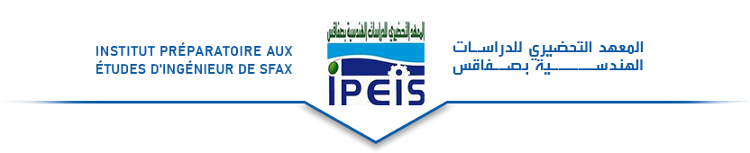

Currently, I am pursuing my engineering degree in computer science at IIT. I am deeply engaged in learning about software development, data structures, algorithms, and emerging technologies such as artificial intelligence and machine learning. My goal is to develop innovative solutions that make a positive impact.
During this period, I completed a rigorous preparatory cycle where I developed a solid foundation in mathematics, physics, and programming. This phase honed my problem-solving abilities and prepared me for the challenges of engineering studies.
I successfully obtained my baccalaureate in the technical section with outstanding results. This was a significant milestone as it marked the foundation of my academic journey and sparked my interest in the world of technology and engineering.